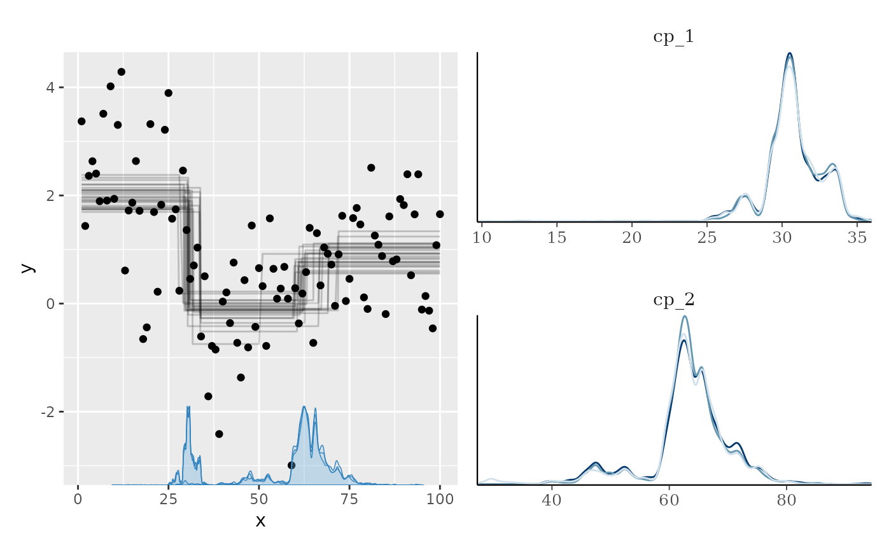
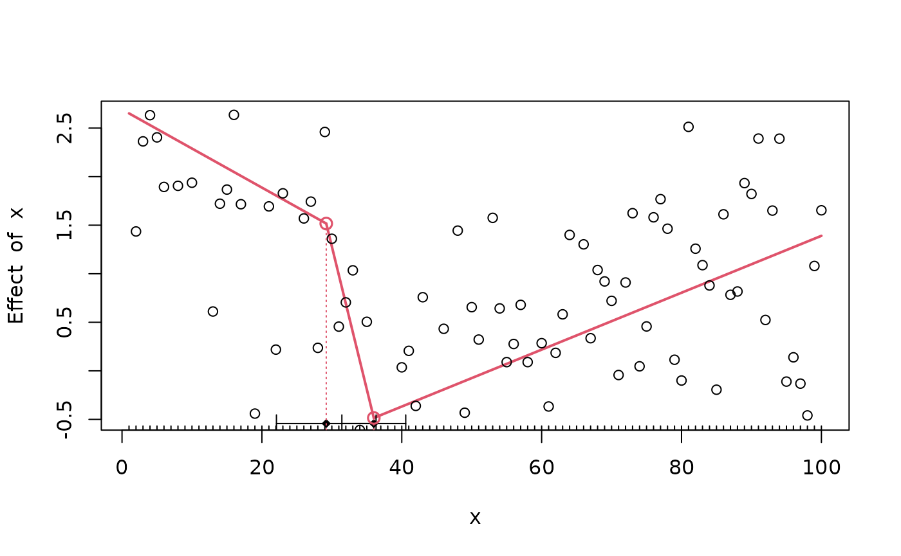

OBS: I have yet to review these packages: not,
breakfast, IDetect,
trendsegmentR, mosum,
ChangepointTesting, changepoint.mv,
changepointsHD, changepointsVar,
InspectChangepoint, breakpoint,
segmentr, Segmentor3IsBack,
trendsegmentR, BayesPiecewiseICAR,
BayesPieceHazSelect,
CausalImpact.
There are a lot of change point packages out there already, so why
mcp? Here are my (probably biased) thoughts about this. I
compiled some tables, summarising change point packages (.xlsx
file here). I will demonstrate each of these packages in an applied
example below to discuss their merits and shortcomings. I recommend this nice
overview of the methodologies used in many of these packages.
Of the packages reviewed here, I think segmented, and
EnvCpt are good if the data fits what they can model, and
mcp is a more capable and general-purpose package at the
cost of speed. You can see the immediate roadmap for mcp at
the GitHub issues
tracker.
Modeling options
How much flexibility does the package allow for modeling the system,
you’re studying? A clear difference here is between packages that allow
you to specify the number of change points, and packages which
infer the number of change points automatically (using some
criteria), captured in the N column below.

Inference
What can you learn, once the model has fitted? While all packages
return the estimated Change Points, few return an index of uncertainty
around that estimate (CP CI: confidence intervals,
highest-density intervals, or posterior densities). Sometimes, it may
not even be the change point that is of interest, but rather the
parameters of the segments in between (params,
params CI). Finally, you may want to compare models, e.g.,
testing whether a change point is present or not, or testing the nature
of the segments between change points
(hypothesis tests).
Note that EnvCpt returns one log-likelihood per model,
which one then could do testing on. segmented returns AIC
and deviance, so ditto here. However, this is something you would have
to do yourself. mcp explicitly supports and recommends
workflows for detailed model comparisons.

Other conveniences
This is a list of other functions, which I find useful on other statistics packages, including simulating data, getting fitted and predicted values given the model, and an assessment of speed. The option to include prior knowledge could be important in some situations.

Unique features of mcp
- Manually specify the segment structure. Other packages allow for
specifying segment structure, but it has to be shared for all segments.
Read more about the formula
syntax in
mcp. - Posterior distribution for each change point. This matters since they rarely conform to known distributions so confidence intervals can be misleading.
-
varying change points: To my knowledge, no other package
implements varying change points, i.e., allowing by-group differences in
change points while sharing all other parameters. Read more about varying change points in
mcp. - Sharing and fixing parameters to values and other parameters as discussed under priors in mcp.
-
Per-segment regression on variance and serial dependence
via the
sigma()(read more here),ar(), andma()(read more here) terms, also allowing for more advanced change points involving, e.g., a change in autocorrelation strength. -
Explicit priors:
bcpis the only other Bayesian change point package I know of. It contains a few high-level prior parameters, but not for specific parameters such as where change points are expected to occur etc. Read more about priors in mcp for more. -
Prior and posterior predictive checks. In general, most
other packages have limited or no model checking functionality. The
default
plot.mcpfitis inherently a visual predictive check and can be applied to priors (mcp(..., sample = "prior")and posteriors. Of course inspecting Gelman-Rubin statistics and effective sample sizes insummary.mcpfit, as well as trace plots (plot_pars(fit, type = "trace")), also go a long way. - Flexible hypothesis testing using
looandhypothesis, including testing the existence of a change point. Most other packages stop at estimation, though some provide p-values. Read more about hypothesis testing and model comparison usingmcp.
Recommendation
Let me go all-out on my ego-serving bias and say that
mcp is the best package unless:
-
You have a lot of data and limited time: While
mcpis reasonably fast for typical problems, MCMC sampling is slower than analytical and specialized solutions. For datasets > 20.000 points and a complicated model, it may takemcphours (but not days) to fit. See tips and tricks how to speed upmcp. Briefly, configure a parallel future plan and lower the number of iterations:future::plan(future::multisession, workers = 4)followed bymcp(..., iter = 1000, adapt = 400). -
You want to automatically detect a large number of change
points: Most packages does automatic change point detection. This
is not a space that
mcptries to fill. But beware that many of the automatic procedures did not capture a change point in the worked examples below. If recommendsegmentedfor the models it “understands” followed byEnvCptand perhapsbcp. -
Multivariate:
mcponly does univariate regression, both for and . This will be implemented if there is a popular request for it. Don’t hesitate to raise an issue on GitHub. For now,bcpseems like the best option to me.
A simple dataset to compare packages
As a simple example, we simulate some intercept-only data with change points at 30 (from mean=2 to mean=0) and 70 (to mean=1) and a residual of 1 SD.
mcp
mcp needs no further introduction. We fit the
three-plateaus model with default priors:.
model = list(y ~ 1, 1 ~ 1, 1 ~ 1) # three intercept-only segments
fit_mcp = mcp(model, data = df, par_x = "x")
summary(fit_mcp)## Family: gaussian(link = 'identity')
## Iterations: 9000 from 3 chains.
## Segments:
## 1: y ~ 1
## 2: y ~ 1 ~ 1
## 3: y ~ 1 ~ 1
##
## Population-level parameters:
## name mean lower upper Rhat ess_bulk ess_tail
## cp_1 30.713 26.81 33.91 1 1667 1542
## cp_2 63.185 45.69 75.66 1 783 628
## Intercept_1 2.041 1.64 2.44 1 4378 5259
## Intercept_2 -0.074 -0.56 0.36 1 1988 2098
## Intercept_3 0.909 0.51 1.31 1 1385 1526
## sigma_1 1.065 0.92 1.24 1 3959 3890The summary shows good parameter recovery, though the second change point is detected a bit early. This is understandable if you look at the data, and the true change point is still within the central posterior interval.
Plotting the posterior distributions of the change points reveal that they are not well represented by a Gaussian or other known distributions. Therefore, confidence intervals are likely to be meaningless for this problem.
library(patchwork)
plot(fit_mcp) + plot_pars(fit_mcp, pars = c("cp_1", "cp_2"), type = "dens_overlay")
mcp takes around 6 seconds to fit this example, which is
the slowest of all the packages considered here. You can reduce that by
running chains in parallel after calling
future::plan(future::multisession, workers = 3).
EnvCpt
EnvCpt can detect change points in mean and variance
(not separately), slopes (“trends”), and AR(1)/AR(2), as well as
conveniently fitting various models without change points. It
automatically infers the number of change points. Unless otherwise
instructed (through models argument), EnvCpt
fits all models to the data, allowing you to pick one.
library(EnvCpt)
fit_envcpt = envcpt(df$y) # Fit all models at once
fit_envcpt$summary # Show log-likelihoodsThe log-likelihoods can be used to maximize the fit. Of interest here
is meancpt. Under the hood, it calls
changepoint::cpt.meanvar, modeling a simultaneous change in
mean and variance. As here, it does not always find the same change
points as changepoint::cpt.meanvar(df$y) because the
default parameters differ between the two.
EnvCpt has a nice plot of all the models:
plot(fit_envcpt)Digging into the meancpt, we get maximum-likelihood
estimates of the change points and the parameters of each segment.
fit_envcpt$meancpt@cpts
fit_envcpt$meancpt@param.estI think the change point at x = 100 should just be
ignored. We see that it approximately identifies the change points,
though without intervals.
segmented
segmented seems to be the most popular package for
change point analysis. It has a very shallow learning curve combined
with great modeling flexibility. You simply specify your model in
lm, glm, Arima, and also work for
e.g. coxph (Cox proportional Hazard). Supply it to
segmented which then segment your data along the x-axis and
applies the linear model in each segment. The trick is identifying the
locations where this split works the best. The positive consequence is
that you get great modeling flexibility with GLM, AR(1) models, etc.
The primary modeling assumption of standard segmented is
continuous (joined) segments. As a result, standard
segmented(..., seg.Z = ~x) estimates joined slope changes
across segments with a single global intercept, rather than independent
per-segment step intercepts. This means default segmented()
is optimized for continuous piecewise-linear models rather than
discontinuous step-change models (though jump/step terms can be
specified). Recent versions of segmented support GLMs
(glm), mixed models (lme), survival
(coxph), and quadratic/polynomial terms, making it a very
capable option for joined-segment models.
segmented is otherwise well developed with prediction
functions, (frequentist) intervals, plots, etc. so if you have large
datasets with impermissible long run times in mcp and it
matches what segmented can model, it is a good option.
Enough talk:
library(segmented)## Loading required package: MASS##
## Attaching package: 'MASS'## The following object is masked from 'package:patchwork':
##
## area## Loading required package: nlme##
## Attaching package: 'nlme'## The following objects are masked from 'package:mcp':
##
## fixef, ranef
fit_lm = lm(y ~ 1 + x, data = df) # intercept-only model
fit_segmented = segmented(fit_lm, seg.Z = ~x, npsi = 2) # Two change points along x
summary(fit_segmented)##
## ***Regression Model with Segmented Relationship(s)***
##
## Call:
## segmented.lm(obj = fit_lm, seg.Z = ~x, npsi = 2)
##
## Estimated Break-Point(s):
## Est. St.Err
## psi1.x 29.2 3.587
## psi2.x 36.0 2.300
##
## Coefficients of the linear terms:
## Estimate Std. Error t value Pr(>|t|)
## (Intercept) 2.69166 0.39044 6.894 6.17e-10 ***
## x -0.04023 0.02273 -1.770 0.08 .
## U1.x -0.25417 0.19489 -1.304 NA
## U2.x 0.32371 0.19368 1.671 NA
## ---
## Signif. codes: 0 '***' 0.001 '**' 0.01 '*' 0.05 '.' 0.1 ' ' 1
##
## Residual standard error: 1.024 on 94 degrees of freedom
## Multiple R-Squared: 0.445, Adjusted R-squared: 0.4154
##
## Boot restarting based on 8 samples. Last fit:
## Convergence attained in 3 iterations (rel. change -1.0416e-06)As expected, the change points are off (psi1.x and
psi2.x). The default plot is sparse, but you can quickly
add more info:
plot(fit_segmented)
points(df)
lines.segmented(fit_segmented)
points.segmented(fit_segmented)
Because the fitted objects returned by segmented
contains aic, deviance, etc. it is in
principle possible to do model comparison. Here is a BIC-based Bayes
Factor testing whether there is one or two change points in the
data:
fit_segmented_1 = segmented(fit_lm, seg.Z = ~x, npsi = 1)
BF = exp((BIC(fit_segmented) - BIC(fit_segmented_1)) / 2) # From Wagenmakers (2007)
BF## [1] 1.633259We can do the same using mcp:
model_1 = list(y ~ 1, 1 ~ 1)
fit_mcp_1 = mcp(model_1, data = df, par_x = "x")
fit_mcp_1$loo = loo(fit_mcp_1)
fit_mcp$loo = loo(fit_mcp)
loo::loo_compare(fit_mcp$loo, fit_mcp_1$loo)## model elpd_diff se_diff p_worse diag_diff diag_elpd
## model1 0.0 0.0 NA 3 k_psis > 0.7
## model2 -5.5 2.7 0.98 6 k_psis > 0.7##
## Diagnostic flags present.
## See ?`loo-glossary` (sections `diag_diff` and `diag_elpd`)
## or https://mc-stan.org/loo/reference/loo-glossary.html.While segmented prefers the one-change-point model,
mcp prefers the (true) two-change-point model. Again, the
models compared here are very different since
segmented does inference on a slope-only model.
strucchange::breakpoints
strucchange::breakpoints() is a lot like
segmented. The difference is that (1) it is limited to
gaussian residuals, and (2) it actually models intercepts, quadratic
terms, etc. It scans through fits with 1, 2, 3,… N break points and
determine where the optimal break points between this number of segments
would lie. For each model it computes the Residual Sum of Squares (RSS;
monotonically smaller with increasing N) and the Bayesian Information
Criterion (BIC; has a minimum) for each N. It selects the model with the
smallest BIC.
For an intercept-only model (y ~ 1) it correctly detects
the two change points with estimates similar to mcp. As
with most other packages, there are no intervals on the change points
nor estimates of the parameters of the segments in between.
Reassuringly, for y ~ 1 + x it “recommends” the same
single change point that segmented found for this
model.
cpm
cpm is an intercept-only (in mean and variance) package,
so it cannot model slopes. It can detect single change points via
detectChangePoint and multiple change points via
processStream. processStream is an automatic
change point detection, using a p-value threshold to determine if a
candidate should be marked as a hit. Multiple ways of computing p-values
(cpmType) are available. In my limited testing, they return
similar change points, though not identical.
library(cpm)
# fit_cpm = detectChangePoint(df$y, cpmType = "Student") # a single change point
# fit_cpm = processStream(df$y, cpmType = "Mann-Whitney") # Detects three
fit_cpm = processStream(df$y, cpmType = "Student") # Multiple change points
fit_cpm$changePointsIt detects two change points, which is good. No intervals are
returned and no plot functions are provided. The second change point is
estimated a bit further away from the true value than
mcp.
changepoint and changepoint.np
changepoint is focused on intercept-only changes. It can
estimate changes in means (cpt.mean), variance
(cpt.var), or both (cpt.meanvar). It is
semi-automatic in that you can set the number of change points using
parameter Q and this defaults to five. It can recover ML
estimates of the intercepts. It does not estimate uncertainty, nor model
checking. It only takes a response variable, so the change point is the
data index, not the point on an x-axis. Make sure that your
data is ordered. In our case it is ordered and we have 1 data point at
each x, so it is optimal for changepoint.
It detects the first change point, but not the second.
library(changepoint)
fit_changepoint = cpt.mean(df$y)
# Return estimates
c(
ints = param.est(fit_changepoint)$mean,
cp = cpts(fit_changepoint)
)Plot:
plot(fit_changepoint)The package changepoint.np extends
changepoint by providing a non-parametric version. It is
unclear which of the changepoint functions are extended,
but it manages to find both change points to a good precision. As with
many other packages, no intervals are provided. As mentioned earlier, I
suspect that EnvCpt uses this function under the hood.
changepoint.np::cpt.np(df$y)@cptsbcp
bcp is the only other Bayesian package in the game. It
automatically detects change points and segment types, though you can
use the parameter d to increase the prior probability of
intercept-only models. It provides estimates of means and probability of
change point at each x-coordinate. It has little additional
functionality. The summary method conveys the same as the plot, so let’s
stick to the plot.
We see that it vaguely captures the change point at
x = 30, and has some smeared-out probability around
x = 60 (mcp detected a single change point at
x = 64 here). bcp has some “false alarms” at
x < 20.
ecp
ecp contains six functions to detect change points. It
is clearly built for multivariate data, but can take univariate too. Of
the six functions, I have not managed to get e.agglo
working for df, but here I demonstrate the other five. The
resulting information is sparse. It detects one of the two change
points, but not both (with the exception of e.divisive,
which returns four),
df_ecp = as.matrix(df$y)
fit_ecp1 = ecp::e.cp3o(df_ecp, K = 2) # maximum 2 change points
fit_ecp2 = ecp::e.cp3o_delta(df_ecp, K = 2) # maximum 2 change points
fit_ecp3 = ecp::e.divisive(df_ecp, k = 2) # 2 change points. Ignored???
fit_ecp4 = ecp::ks.cp3o(df_ecp, K = 2) # maximum 2 change points
fit_ecp5 = ecp::ks.cp3o_delta(df_ecp, K = 2) # maximum 2 change points
# Show the change point estimates
str(list(
e.cp3o = fit_ecp1$estimates,
e.cp3o_delta = fit_ecp2$estimates,
e.divisive = fit_ecp3$estimates,
ks.cp30 = fit_ecp4$estimates,
ks.cp3o_delta = fit_ecp5$estimates
))TSMCP
[Update: TSMCP is not on CRAN anymore] Short for
“Time-Series Multiple Change Point”. The output is a single number (!).
For the problem at hand, changing method makes no
difference. For many other c (c = 0.3,
c = 4), it fails to find any change points at all. There is
also TSMCP::cpvnts() to model AR(N), but I have failed to
make it find any change points in the present data set.
It finds the change point at x = 30, but not the second
change point at x = 70.
TSMCP::tsmcplm(df$y, X = NULL, method = "adapt", c = 1)robts::changerob
robts is about robust time-series regression. It is not
on CRAN, so it has to be installed using
install.packages("robts", repos="http://R-Forge.R-project.org").
I fail to install the dependencies, and development of the package seems
to have stopped around 2014. It won’t be covered further here.
Packages doing only one change point
-
strucchange::Fstats: Returns the estimated change point (one number), and nothing else.strucchange::Fstats(y ~ 1, data = df)find the change point at 30 in the present data. -
SiZer::piecewise.linear: Returns a change point and parameter estimates, optionally with an interval. Call likepiecewise.linear(df$x, df$y, CI = TRUE). Only joined slopes are supported which makes it misestimate the change point in the present data 39 [36.5, 47], but it is consistent withsegmentedwhich uses a similar model. -
easyreg::bl. -
lm.br::lm.br. Choose between line-line, line-plateau, or plateau-line. Yields confidence intervals. All of these are non-suitable for the present plateau-only model.lm.brstands out with the following features: (1) it can take multiple predictors, and it uniquely only models change point over just one of them, keeping the others constant. In comparison,segmentedmodels changes in everything, as far as I understand it. (2) It can take known variance. (3) It can take data weights.
Packages doing only fixed change points
As explained in the article on mcp
formulas, fixed change points can be implemented in almost all
regression functions. You simply have an indicator variable saying
whether there has been as shift at the corresponding x-value and use it
like lm(y ~ 1 + x * I(x > 30), data = df). Or if you
don’t want a carry-over effect from the first segment, do
lm(y ~ 1 * I(x < 30) + x * I(x >= 30), data = df).
This will work for most regression packages in R, including
survival and lme4.
Some packages include this in a way where you don’t have to code your indicators yourself, including:
-
scan::plmandscan::hplm. To get started here, make sure to transform your data to ascan::scdfobject.
Others
I have yet to test these:
-
TSISandsegmenTiermay be coerced to do change point analysis, though it is mean for much more complicated switch point models in gene expression analysis. It’s primary interface is a Shiny App. -
plrs::plrs. Piecewise Linear Regression, targeted at DNA and gene expression. May also be coerced into simpler problems.